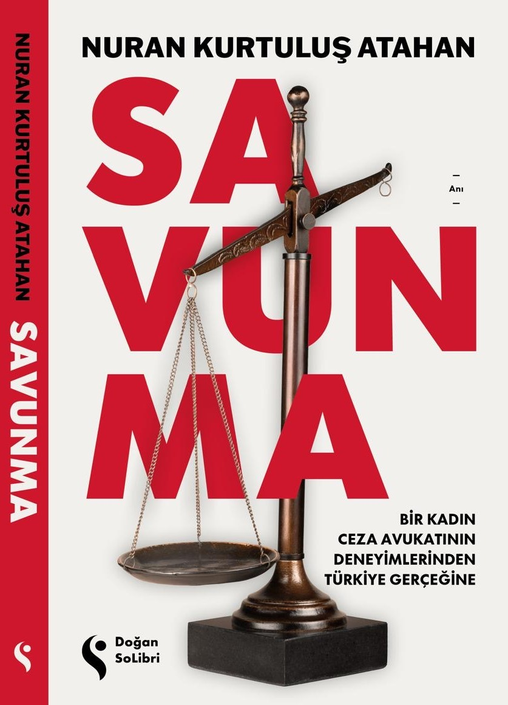

Savunma Hakkı
Savunmanın yalnızca sanığın değil, adaletin de güvencesi olduğunu hatırlatır.

Ağır ceza mahkemelerinden taşra adliyelerine uzanan davalar, insan hikâyeleri ve Türkiye’nin yargı gerçeği. SAVUNMA, ceza avukatı Nuran Kurtuluş Atahan’ın yarım asra yaklaşan meslek deneyiminden süzülen; savunma hakkını, adil yargılanmayı ve hukuk ile hayat arasındaki gerilimi anlatan güçlü bir tanıklık.
Satın Al"Türkiye’deki yargının gerçeğini anlatan bu kısa hikayeler özellikle mesleğe yeni başlayan genç avukatlara hayat dersi vereceği gibi üstatların da bir meslek muhasebesi yapmalarına vesile olabilecek nitelikte kısa hikayelerdir."
Prof. Dr. Feridun Yenisey — Bahçeşehir Üniversitesi Hukuk Fakültesi / Kitabın Sunuşundan
SAVUNMA, bir kadın ceza avukatının meslek anılarından doğar; fakat yalnızca dava özetleriyle yetinmez, geçmişe dönük bir hatırat olarak da kalmaz. Cinayet dosyalarından siyasi yargılamalara, taşra adliyelerinden büyük şehirlerin ağır ceza mahkemelerine uzanan bu anlatı, yargının insan hayatına değdiği en kırılgan yerleri görünür kılar.
Nuran Kurtuluş Atahan, savunmanın suçu savunmak değil; hukukun doğru uygulanmasını, adil yargılanmayı ve insan haklarının korunmasını sağlamak olduğunu, yaşanmış dava tecrübeleri içinden anlatır. Her olayın kendi koşulları vardır; her dosyanın ardında ise dışarıdan görünmeyen bir hayat, bir insan hikâyesi, bir koşullar zinciri ve çoğu zaman bir adalet arayışı vardır.
Bu kitap, Türkiye’de yargı gerçeğine içeriden bakan bir tanık olarak, savunma makamının yeri, hukuk devleti fikri, kadın avukat olmanın görünmeyen yükleri ve insanın adalet arayışı içinde karşılaştığı hukuki, insani ve toplumsal engeller üzerine düşünmeye çağırır.
Bir insan suçlandığında, gözler yalnızca iddiaya çevrilir. Oysa hakikat, çoğu zaman görünenin gerisindedir. Adalet ise yalnızca verilen kararda değil, o karara giden süreçte şekillenir.
SAVUNMA, ceza yargılamasına bir avukatın masasından değil, duruşma salonunun içinden bakar. Yarım asra yaklaşan meslek hayatından süzülen bu anlatı; sanığın, mağdurun, avukatın ve mahkemenin kesiştiği yerde, Türkiye’de adalet arayışının nasıl yaşandığını gösterir.
Savunmanın yalnızca sanığın değil, adaletin de güvencesi olduğunu hatırlatır.
Tutukluluktan duruşma düzenine, yargılamanın insan hayatında bıraktığı izleri görünür kılar.
Suç isnadı karşısında insanı koruyan en temel ilkenin, kâğıt üzerinde değil, asıl olarak uygulamada sınandığını anlatır.
Yerel ilişkiler, mahkeme koridorları ve gündelik hukuk pratikleri içinden ülkenin adalet manzarasına ışık tutar.
Dönemin baskılarını, kamuoyu etkisini ve davaların toplumsal hafızadaki yerini somut deneyimler üzerinden aktarır.
Savunmanın yargı içindeki yerini, duruşma salonunun düzeninde bile görülen eşitsizlik üzerinden somutlaştırır.
SAVUNMA, hukuku yalnızca kanun maddeleriyle değil, insan hikâyeleriyle de düşünmeye çağıran bir tanıklık.
SAVUNMA’ya Doğan Yayınları ve seçili kitap satış kanalları üzerinden ulaşabilirsiniz.
SAVUNMA’ya ilişkin söyleşi, basın, etkinlik ve okur mesajları için aşağıdaki form üzerinden iletişime geçebilirsiniz.